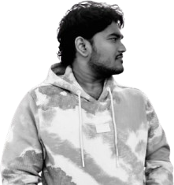
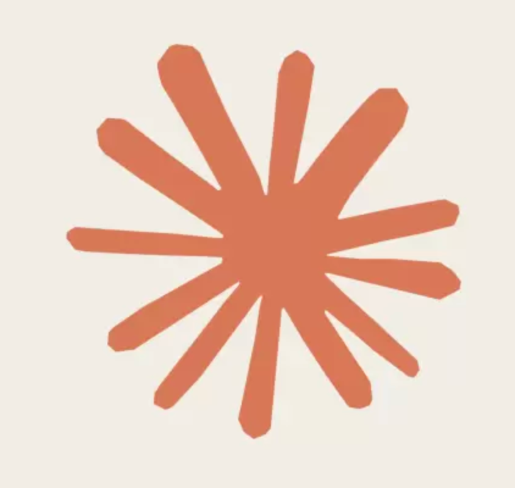
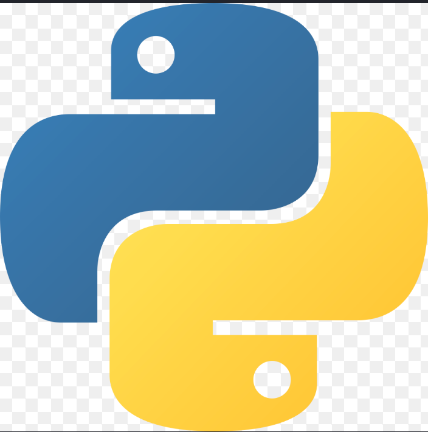
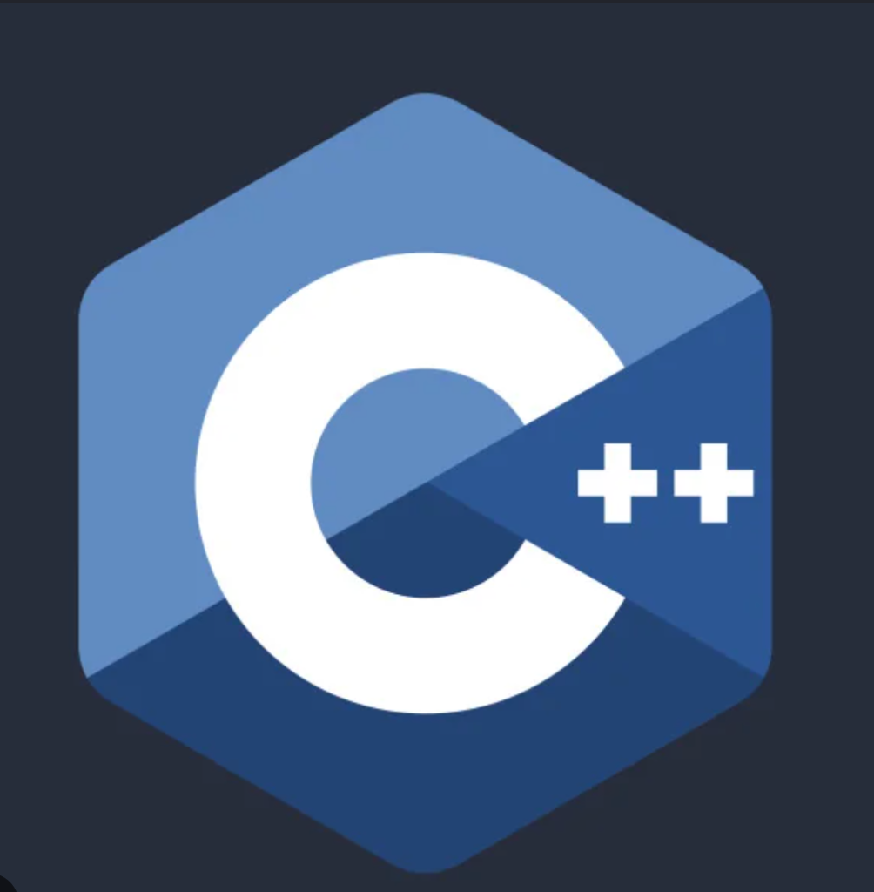

Dev



93%
when you give an LLM
too much autonomy.
IF IT'S NOT LIVE, IT'S NOT DONE.
Tutorials that dead-end at localhost don't count. If someone else can't actually use it, it's not shipped.
Full-Stack Developer
Built Cascade, FinTwin, Signal & GitGravity — all shipped live, not just prototyped.
Also learning DSA — because agents don't ace interviews for me.
here
built a lot
too
professionally.
felt too calm.
happy.
I'm an open book.
Here is the unfiltered timeline of how
I figured things out.
Then it became real projects.
Agents came later.

Experience
jump straight to next section (Best Work).
जयपुर मेट्रो में
आपका स्वागत है
Welcome to Jaipur Metro
insomniac Work
contact Me
Ready to make a move? Drop an email to talk projects, discuss internships, collaborations or just to say hi.